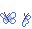
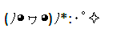
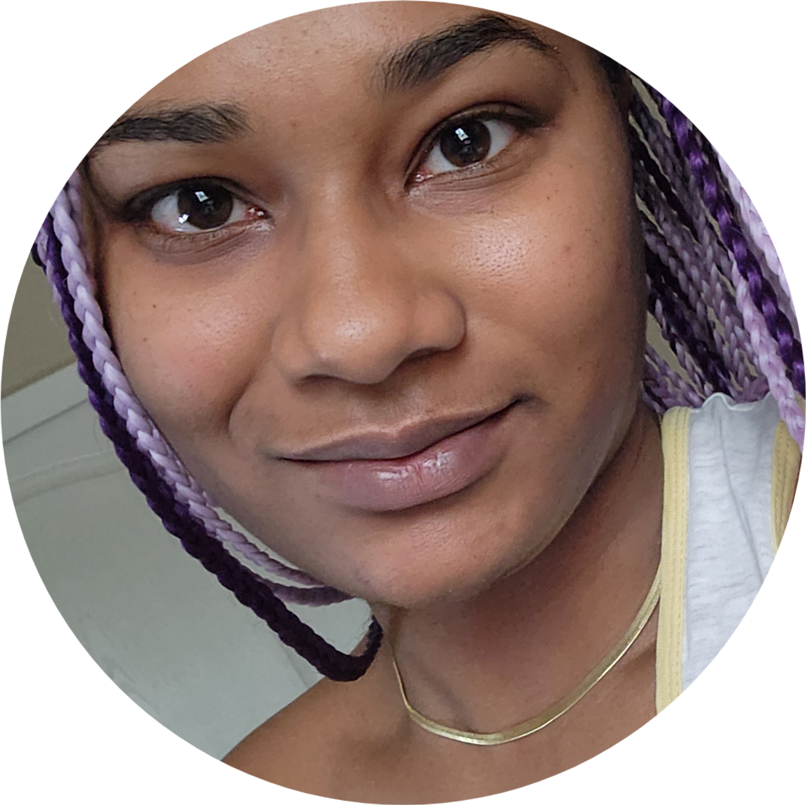

hi, hello there 𐙚
I don't really have any nicknames -- just call me Jasmine.

I'm Black American and in my 30s. she/her/hers. I'm an adoring mom of two, and being a parent makes up a majority of my life right now.
lover of chocolate and ice cream, tea, and the color purple. I don't watch a lot of TV and I hardly watch movies; I do binge a lot of Youtube videos, though (I love long-form content). if I can start to slow down a bit more in life, I'd make more time for anime but it's subbed > dubbed in this house, and I typically multi-task when watching shows.
I tend to spend most of my free time alone in my internal worlds, but feel free to reach out if you're also interested in occult/esoteric topics!


pieces of me:
- star sign: gemini ☼ scorpion ☾ + ↑
- enneagram: 1w2
- human design: 2/4 profile
- MBTI: INTJ
- YouTube addict
- lover of planners and planner accessories
- big fan of candles and loose-leaf tea
- plant lady
favorites:
- colors: purple, blue, and silver
- foods: salmon, sushi, poke
- time of day: midnight
- weather: light rain
- music genres: hip-hop, lofi, vaporwave/mallsoft
- musicians: Majid Jordan
- video games: Stardew Valley, Animal Crossing, Ace Attorney (the series)
- comfort show: King of the Hill
- hobbies: listening to music, dancing, card-reading, puzzles, rollerskating
- scents: jasmine, rose
dislikes:
- bugs
- jokes at others' expense
- disorganization
- mayonnaise
- gore + violence
sounds like me:

Most social media accounts that I still have are inactive, but you can still find me on tumblr and status.cafe.